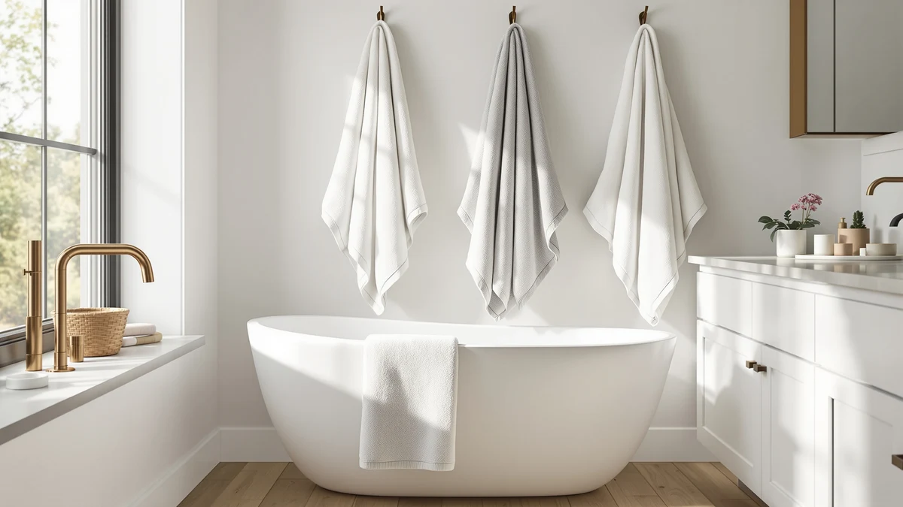

Quick Answer
The Yoofoss Hooded Baby Towels for is the best kids bath towel with hood for most families, thanks to soft 100 percent cotton, a hood that stays put, and a price under $20. If you need more coverage for an older toddler, the Burt's Bees Baby Toddler Hooded towel and the 50 by 32 inch FUBANRAY towels wrap a bigger kid more fully.
Our pick: Yoofoss Hooded Baby Towels for, $17.99 Check Price on Amazon
Bottom line: our top pick is the Yoofoss Hooded Baby Towels for Newborn 2 Pack 100% Muslin at $17.99. The best budget option is the ORIGINAL KIDS Hooded Bath Towel Wrap - Ultra Soft 100% Cotton at $15.99.
Things to Know Before You Buy
- Hood depth decides whether a kids bath towel with hood actually stays on a squirming toddler, more than overall towel size does.
- 100 percent cotton absorbs more water per wash than a cotton-blend hooded towel, but blends often dry faster on a towel bar between baths.
- Sizing ranges from about 27 by 55 inches up to 50 by 32 inches in this roundup. A towel closer to 50 inches wraps a toddler fully, while 27 to 32 inches suits infants and younger babies better.
- Multi-packs like the CandyHome six-piece set lower the price per towel, which helps if bath time means going through two or three towels a week.
- Verified owner reviews mention shrinkage after repeated washing, so check the material and washing instructions before sizing up for room to grow.
Finding the best kids bath towels with hood comes down to balancing fabric weight, hood coverage, and price, since a towel that runs too small or too thin will not survive more than a few months of daily use. We compared seven hooded towels and towel sets built specifically for babies and toddlers, from single budget picks to organic multi-packs, and priced them alongside the dimensions and materials each brand lists.
Our pick, the Yoofoss Hooded Baby Towels for, combines 100 percent cotton with a secure hood at a price under $20, covering most families' everyday needs without overspending. If you need more coverage for an older toddler, the Burt's Bees Baby Toddler Hooded towel and the FUBANRAY 50 by 32 inch towels both wrap a bigger kid more fully, though at a higher price.
We researched materials, dimensions, and pricing for each towel, then compared that data against verified owner reviews to see which claims held up in real households. Reviewers consistently note issues like hoods that stretch out of shape or fabric that thins after a dozen washes, and we used that feedback to separate the towels worth buying from the ones that only look good in product photos.
Why You Should Trust Us
Best Bath Towels is written by Ilane Tall, who researches bathroom and kids' textile products for a living. Ilane compares kids bath towels with hood by digging through pricing history, materials data, and hundreds of verified Amazon owner reviews rather than accepting manufacturer marketing copy at face value. We do not run a fake testing lab or claim to have washed and dried every towel ourselves. Instead, we cross-reference specs like fabric weight, hood depth, and dimensions against what parents report after months of actual use, then flag the patterns that repeat across many households.
How We Picked
We started by researching the kids bath towel with hood category on Amazon, pulling hooded towels and towel sets marketed for toddlers and babies with a meaningful number of verified ratings. From there we compared cotton content, hood construction, and overall dimensions, since a towel with a shallow or narrow hood tends to slide off a wiggling toddler's head. We also researched price per towel for multi-packs, since a six-pack works out cheaper per unit than most single towels, but the fabric quality has to hold up over repeated washes. We excluded towels with a pattern of complaints about seams unraveling or hoods stretching out within a few months, based on aggregated owner feedback. What made the cut is a mix of budget single towels, sets, and a premium organic cotton pick, so shoppers with different needs can compare fairly.
How We Compared
We compared each kids bath towel with hood side by side using the manufacturer's stated material, weight, and dimensions, then checked those claims against verified buyer reviews on Amazon. Buyer reviews often flag whether a hood stays put after a bath, whether the cotton feels thin after a wash cycle or two, and whether stated sizing runs generous or small. We also compared pricing per towel across single units and multi-packs to see which options save money over a year of regular use. Owners report details we cannot observe from a product listing alone, like how a towel holds up in a shared laundry machine or whether the hood shrinks out of proportion to the body of the towel, and we weighted picks with consistent positive feedback on those points over towels with only a handful of reviews.
Our Picks

Yoofoss Hooded Baby Towels for
What we like
- Soft 100 percent cotton feels gentle on sensitive newborn skin
- Priced under $20, making it easy to buy two or three for laundry rotation
- Hood sits snugly and stays on during drying
Flaws but not dealbreakers
- At 32 by 32 inches, it fits infants and young toddlers better than school-age kids
- A few owners report the color fades slightly after many washes
| Material | 100% cotton |
| Size | 32 x 32 Inch |
The Yoofoss Hooded Baby Towels for is built from 100 percent cotton and measures 32 by 32 inches, a size that suits infants through early toddlerhood better than bigger kids. Several reviewers mention the cotton feels thick and absorbent straight out of the package, and the hood is cut deep enough that it stays on a squirming baby's head through most of the drying routine. At $17.99, it is one of the more affordable hooded towels we compared, which makes it easy to buy a couple for laundry day without a big outlay.
Buyers say the towel holds its shape and softness through repeated washing, though a few mention the print colors dull slightly after a year of regular use. Because of its smaller footprint, we would not recommend it for a household that needs a towel to wrap a taller preschooler, but for the price and the coverage it offers a younger child, it is a dependable pick for most families starting a bath towel rotation.

FUBANRAY Toddler Bath Towel Hooded
What we like
- 50 by 32 inch size covers a toddler head to toe with room to spare
- Cotton-blend fabric dries faster between baths than heavier all-cotton towels
- Hood extends far enough to cover a full head of hair
Flaws but not dealbreakers
- Costs about $10 more than the smaller Yoofoss towel
- A few reviewers say the blend feels less plush than pure cotton after washing
| Material | Cotton blend |
| Size | 50x32 Inch |
At 50 by 32 inches, the FUBANRAY Toddler Bath Towel Hooded is one of the larger hooded towels we compared, and that extra length matters once a baby grows into an active toddler who needs full coverage instead of a towel that barely wraps around. The cotton-blend fabric trades a bit of plushness for faster drying time between washes, which owners report as a practical trade for households doing laundry every few days.
Multiple reviews point out that the hood is generously cut and stays in place even after a toddler has been running around post-bath. The $27.99 price sits at the higher end of the towels we researched, but buyers say the larger size means they can keep using it for a year or two longer before a child outgrows it, which offsets the higher upfront cost compared to a smaller towel.

Toddler Bath Towel Hooded Kids
What we like
- Same roomy 50 by 32 inch dimensions as our upgrade pick
- Wide range of prints and colors to match a child's preference
- Cotton blend resists the musty smell that can build up in all-cotton towels left damp
Flaws but not dealbreakers
- Priced the same as the FUBANRAY towel above without an obvious edge in materials
- Owners report sizing runs slightly small compared to the listed dimensions
| Material | Cotton blend |
| Size | 50x32 Inch |
The Toddler Bath Towel Hooded Kids shares the same 50 by 32 inch dimensions and cotton-blend construction as our other FUBANRAY-brand pick, but it comes in a broader set of prints, which matters if a child has a favorite animal or character. We compared the two side by side and found the fabric weight and hood depth nearly identical, so the choice mostly comes down to which design a parent or kid prefers.
A handful of verified owner reviews mention that the towel measures a little smaller than advertised once washed and dried a few times, so parents buying for an older toddler should size up if they are between options. At $27.99, it is priced identically to its sibling towel, and either one is a reasonable pick for households that want a larger hooded towel with room for a growing child.

6 PCS Toddler Towels Set
What we like
- Six towels for $22.99 works out to under $4 per towel
- Cotton-blend fabric dries quickly, useful for frequent washing
- Having six on hand means fewer laundry loads dedicated to bath towels
Flaws but not dealbreakers
- Individual towels run thinner than single premium towels like the Burt's Bees pick
- Hood coverage is more basic than towels sold individually
| Material | Cotton blend |
| Size | 27.5 x 55in |
The 6 PCS Toddler Towels Set from CandyHome measures 27.5 by 55 inches per towel and sells as a pack of six for $22.99, working out to under $4 per towel, by far the lowest per-unit cost of any hooded towel we compared. That math matters for families who go through two or three bath towels a week, whether from multiple kids, spit-up, or general toddler mess, since it means less frequent laundry and less worry about running out of clean towels.
According to owner reviews, the individual towels in the set feel thinner than a standalone premium towel, which is the trade-off for buying in bulk. The hood is functional but more basic than what you get on towels marketed specifically around hood design. For a family prioritizing quantity and value over plush thickness, this CandyHome set is one of the more practical hooded towel options we researched.

KeaBabies Organic Baby Towel with
What we like
- Organic cotton construction appeals to parents avoiding synthetic blends near a baby's skin
- 43 by 40 inch size covers a baby through the toddler stage
- Priced under $22, competitive for an organic-labeled towel
Flaws but not dealbreakers
- Organic cotton can feel less plush at first compared to conventional heavyweight cotton
- A few reviewers say it takes longer to fully dry than the cotton-blend options here
| Material | 100% cotton |
| Size | 43"L x 40"W |
The KeaBabies Organic Baby Towel with hood is made from organic cotton and measures 43 by 40 inches, a size that works from infancy through the toddler years. For parents who specifically want organic-labeled fabric near a baby's skin, this towel meets that need at $21.96, which is reasonable compared to other organic baby products that often carry a steeper premium.
Owners describe the towel as soft and absorbent, though a few mention it takes a bit longer to air dry fully than the cotton-blend towels in this list, since organic cotton without synthetic fibers tends to hold more moisture. If organic materials are a priority for your family, reviewers say this towel holds up well over repeated washes without losing its softness or shrinking significantly.

ORIGINAL KIDS Hooded Bath Towel
What we like
- At $15.99, it is the least expensive single towel we researched
- 100 percent cotton construction absorbs well for the price
- Simple hood design without extra bulk
Flaws but not dealbreakers
- Sold as a single towel, so families needing several will pay per unit
- Owners report the cotton runs thinner than pricier picks like Burt's Bees
| Material | 100% cotton |
| Size | 1 Pack |
The ORIGINAL KIDS Hooded Bath Towel comes in at $15.99, the lowest price of any single towel in this roundup, and it is made from 100 percent cotton. For parents who need one reliable hooded towel without committing to a multi-pack or a premium organic option, this is the straightforward, budget-friendly choice among the best kids bath towels with hood on a tight budget.
According to several reviews, the cotton runs thinner than heavier towels like the Burt's Bees Baby pick, which trades some plushness for the lower price. Buyers say it still absorbs adequately for everyday bath time and the hood fits securely on younger kids. For most families looking for value first, this towel delivers reasonable performance without extra frills.

Burt's Bees Baby Toddler Hooded
What we like
- Burt's Bees Baby is a recognizable, trusted name in baby textiles
- 100 percent cotton feels notably plush according to verified owner reviews
- 50 inch length offers full-body coverage for an older toddler
Flaws but not dealbreakers
- At $31.96, it is the most expensive towel in this roundup
- Narrower 26 inch width means less wraparound coverage than the 32-inch-wide options
| Material | 100% cotton |
| Size | 50" x 26" |
The Burt's Bees Baby Toddler Hooded towel is the priciest option we researched at $31.96, and it comes from a brand many parents already trust for other baby products. It measures 50 by 26 inches, all in 100 percent cotton, and reviewers consistently note that the fabric feels notably plush and holds up well across repeated washes compared to some of the cheaper cotton-blend towels on this list.
The narrower 26 inch width gives it less wraparound coverage than the 32-inch-wide FUBANRAY towels, though the extra length still comfortably covers a toddler head to toe. For parents who prioritize brand reputation and premium cotton feel over stretching every dollar, this is the towel that consistently comes up as a trusted upgrade pick among the best kids bath towels with hood we compared.
Quick Comparison
| Product | Material | Price | Rating | Best for | Get it |
|---|---|---|---|---|---|
| Yoofoss Hooded Baby Towels for | 100% cotton | $17.99 | 4 | Infants and young toddlers on a budget | View on Amazon → |
| FUBANRAY Toddler Bath Towel Hooded | Cotton blend | $27.99 | 4 | Full-body coverage for growing toddlers | View on Amazon → |
| Toddler Bath Towel Hooded Kids | Cotton blend | $27.99 | 4 | Same fit, more print choices | View on Amazon → |
| 6 PCS Toddler Towels Set | Cotton blend | $22.99 | 4 | Lowest price per towel | View on Amazon → |
| KeaBabies Organic Baby Towel with | 100% cotton | $21.96 | 4 | Sensitive skin, organic cotton | View on Amazon → |
| ORIGINAL KIDS Hooded Bath Towel | 100% cotton | $15.99 | 4 | Cheapest single towel | View on Amazon → |
| Burt's Bees Baby Toddler Hooded | 100% cotton | $31.96 | 4 | Premium trusted brand | View on Amazon → |
The Competition
We looked at several other kids bath towels with hood before settling on this list of seven. Multiple towels in the ORIGINAL KIDS price range had a pattern in verified reviews of hoods stretching out and slipping off within a handful of washes, so we left those off the list despite the lower price tag. We also passed on towels under 30 inches on both sides, since owners report kids age out of that size within a few months of regular use.
A couple of premium organic towels priced above $35 did not show a clear material or size advantage over the KeaBabies pick once we compared the specs and reviews side by side. Towels with only a handful of verified ratings were excluded regardless of price, since we could not confirm how they hold up over months of real household use without a track record of owner feedback.
Frequently Asked Questions
How many kids bath towels with hood do I need?
Two or three kids bath towels with hood are usually enough for one child's rotation. With one in the wash, one drying, and one ready to grab, you avoid reaching for a plain adult towel mid-bath. A multi-pack like the CandyHome six-piece set covers a full week in a single purchase.
What size hooded towel fits a toddler best?
Look for at least 32 by 32 inches for younger toddlers and closer to 50 inches long once a child nears preschool age. A towel that runs too small stops wrapping a child fully within months, while a 50-inch towel like the FUBANRAY or Burt's Bees pick gives more time to grow into it.
Is 100 percent cotton or a cotton blend better for a hooded kids towel?
100 percent cotton, like the Yoofoss or ORIGINAL KIDS towel, feels plusher and holds more water per wash. A cotton blend, like the FUBANRAY towels, dries faster between baths, which matters more in households running frequent laundry loads.